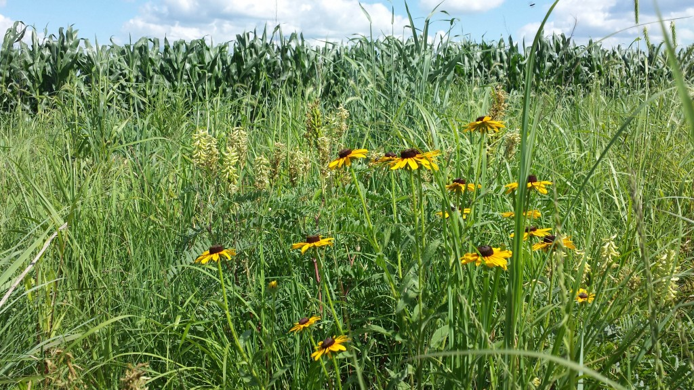
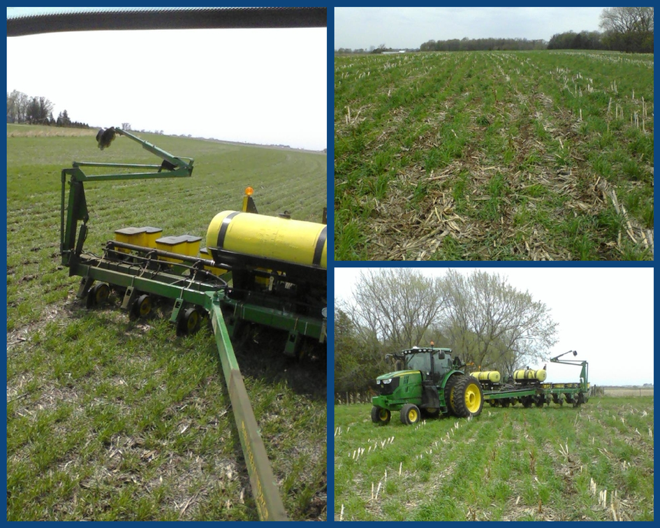
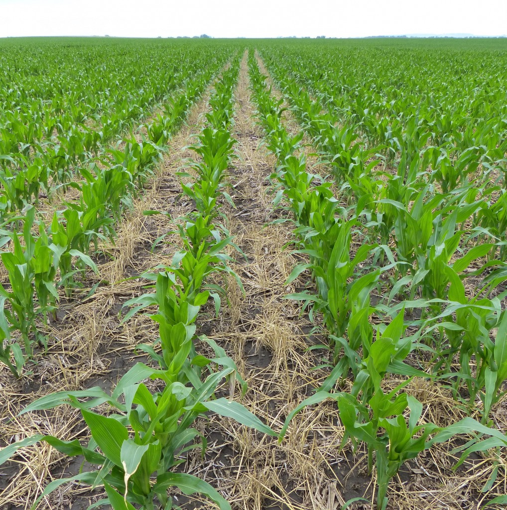
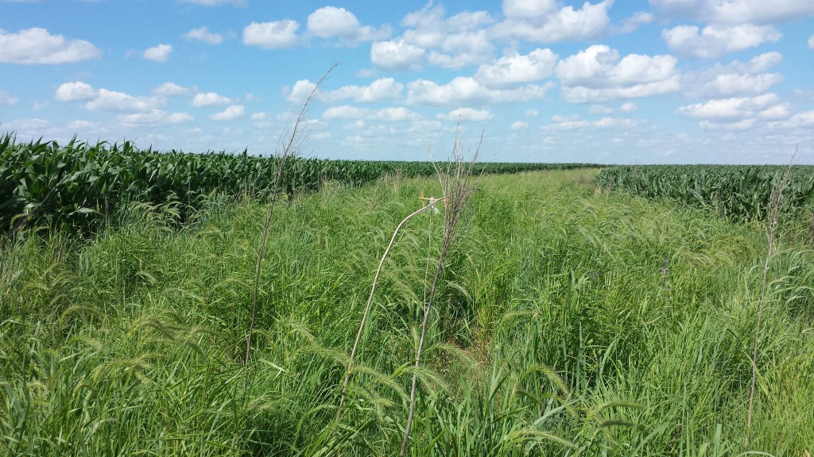
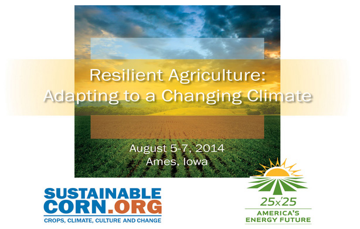

Dick Sloan evaluates corn no-tilled planted into cover crop mix of winter wheat, cereal rye and hairy vetch.
The following post was written by Charles Wittman, a communication specialist for the ISU Extension Watershed Projects in northeast Iowa following a recent field day at the farm of Richard (Dick) Sloan near Rowley, IA. Dick is a member of the Sustainable Corn Project’s advisory board, chairman of the Lime Creek Watershed Council and a Practical Farmers of Iowa Outreach Leader.
Dick Sloan provided a glimpse into his evolution as a conservationist farmer along with an update of his no-till and cover crop farming practices at a June 19 Lime Creek field day.
“(I am) trying for a more resilient farming,” he told the 66 attending the Practical Farmers of Iowa sponsored event. Unfortunately, heavy rain (nearly 2 inches) and cracks of thunder kept the crowd inside the machine shed, preventing most from getting a close-up view of the practices.
In conversation following the field day, Dick elaborated on his approach to resilient farming:
“I was invited to speak about our (Lime Creek’s) performance-based water quality project at the Leopold Center’s resiliency conference (a few years ago). While I explained our use of SCI (Soil Conditioning Index), PI (phosphorus index) and end-of-season cornstalk nitrate tests to plan rotations and tillage practices to build organic matter, I recognized some limitations,” he said.
“While some soils had the highest SCI with continuous corn and fall chiseling and lots of fertilizer, it still left the soil susceptible to erosion and provides no environmental services to protect from flooding, loss of pollinators and native species. It lacks diversity.” 
Diversity is the method nature uses to be capable of responding to environmental stress, he continued, “In a prairie, some plants do well in a dry year and different plants do well in a wet year. This ability of a natural system to respond to whatever hits us is resilience.”
What can corn, soybean, livestock farmers do?
“We already recognize the value of crop rotations, the boost corn gets from a previous soybean crop and the value of the manure going back to fertilize crops fed to livestock,” Dick said.
The resiliency of mixed farming “has kept many of us from getting rid of our animals and soybeans. Farmers with ruminants to feed don’t tear up pastures along streams. They use small grains and perennials like alfalfa to further diversify their crop rotations and use more stable forms of organic nitrogen for corn production.”
“Adding fall-seeded cover crops like rye, wheat, barley and vetch builds on that diversity and keeps the soil covered with living plants, adding carbon to soils and feeding the ‘underground livestock’ which are important for nutrient cycling in the soil. If we can get six weeks of growth from covers, it promises the effects of a crop rotation to boost production of our summer crops,” he concluded.
One of Dick’s showcase fields is adjacent to the farmstead. More than 300 acres are planted in a corn-corn-bean rotation, and he briefly explained the field’s history:
“I had soybeans no-till drilled on 15-inch rows in the area closest to my buildings in 2013 following corn in 2012. I drilled a mix of 40 pounds of white winter wheat and 30 pounds of cereal rye with 12 pounds of hairy vetch in 7.5″ rows after soybean harvest,” he said. Part of the field was planted Oct. 2 and the rest near the prairie was planted Oct. 13. 
This year, he planted the corn on May 6 with starter fertilizer and sprayed the cover crop May 18 with a burndown plus a residual before the corn came up. Two weeks later he viewed the field with mixed feelings, since it appeared as there were swaths of cover crop that remained green. However, by the field day all cover crop was brown and the corn looked good. 
In June 2012, Dick created Conservation Reserve Plan (CRP) strips in the field, seeded with 29 native species of grasses and forbs.
The strips are part of Iowa State University’s STRIPS (Science-based Trials of Rowcrops Integrated with Prairie Strips) Projects. Amy Moorhouse, ISU master’s graduate student, is studying bee diversity on STRIPS this year and in 2015, including Dick Sloan’s. In an email to Dick she wrote: “By looking at strips … with numerous flowering species we will be able to determine which mixes provide ample habitat for bees. Dick Sloan’s prairie strips are considered high diversity, with species such as purple prairie clover and wild bergamot.”
While corn and soybeans may not be dependent upon bees for pollination, bees are an indicator of ecosystem health and quality. The higher the diversity of both bees and plants in the strips, the healthier the system is. 
For Dick, there is added benefit to cover crops and prairie strips in the two-way conversations he can have with the researchers, an opportunity to add more to his resiliency learning.
A National Resilient Agriculture Conference is set for August 5-7 in Ames, IA. For more information and to register click here. 


{kind=link}
{kind=link}
{kind=link}
{kind=link}
{kind=link}